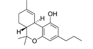

THCV
Primary Cannabinoid About Tetrahydrocannabivarin (THCV)
Tetrahydrocannabivarin, or THCV is a compound that offers a unique array of benefits that set it apart from the other cannabinoids. While similar in molecular strucure to THC, THCV has a higher boiling point at 428 °F, compared to the boiling point of THC which is over a hundred degrees lower at 315 °F. This is some evidence to suggest that THCV may have intoxicating effects at large doses, however, it is usually present in too small a quantity among commercial strains to pose any significance and a user is not likely to ever get intoxicated from consuming THCV. On the contrary, there is evidence that shows that while in smaller quantities THCV diminishes THC’s ability to activate CB1 receptors, similar to CBD, that effect is reversed at higher doses, at which point THCV will start acting as an antagonist to those same receptors.
In another contrast to THC, THCV is a powerful appetite suppressant, with many patients reporting success at losing weight with the help of cannabis. It may also help with diabetes, as research shows potential in THCV's ability to regulate blood sugar levels and reduce insulin resistance. For patients suffering from panic attacks, THCV may suppress anxiety without dulling emotional effect, as many pharmaceutical solutions often do. Tremors, hand-eye coordination and motor control also appear to be improved by THCV among patients with Alzheimer's disease, for which research is currently in progress. Finally, it has been shown that THCV promotes bone growth by stimulating the creation of new cells, giving it a promissing future for treating osteoporosis and other bone-related ailments.
Laboratory test results correlate to strain attributes and subsequently, to the recommendations provided by StrainRx. A strain rich in THCV will have elevated values for appetite suppression and to curb anxiety. Research is ongoing to unlock additional medical benefits of THCV and our data will be updated with new information as it becomes available.
Looking for a high THCV strain? Use our Cannabis Search Engine to find it near you!